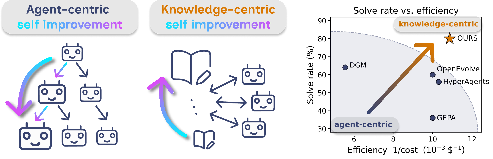

Knowledge-Centric Self-Improvement
Keep the agents simple and disposable. Let the knowledge base be the thing that improves.
Most self-improving AI systems evolve the agent.
Approaches like DGM and HyperAgents grow ever more elaborate scaffolds and patch their own internals across generations. The improvement becomes tied to a particular agent design; transferring it elsewhere is hard, and running it is expensive.
We tried the opposite: hold the agent fixed — generic, stateless, deliberately simple — and evolve a curated knowledge base that the agent reads from instead.
Generic Haiku 4.5 agents reading that bundle reach 82% on ARC-AGI-1, 84% on SWE-bench Pro, 80% on Polyglot, 47.2% on Terminal-Bench 2 — often 6× cheaper than the agent-centric baselines they beat.

Four benchmarks, all at Haiku 4.5.
We tested the same protocol on abstract reasoning, code editing, and terminal operations — all with the same generic agent harness, varying only the task source.
Each result is reproducible by reading the bundle the run curated.
The curated knowledge bundle from each run is saved to disk; the agent harness loads it before its first attempt on a held-out task and never sees the training tasks themselves.
Against the agent-centric baselines, the numbers gap widens further on cost.
DGM at SWE-bench Pro: 66% solve at $456 per task. HyperAgents at SWE-bench Pro: 42% at $276 per task. Ours: 84% at $76 per task. The gap is most stark on the hardest benchmarks where agent-centric stacks burn the most tokens.
Three stages, each at a different scope.
Stage 1 · Task-level forum.
For each task, agents turn raw traces into structured local evidence — which hypotheses they explored, which checks were informative, where they were misled. The record stays scoped to the task it came from.
Stage 2 · Cross-task forum.
Agents discuss across tasks in the current generation. Every cross-task claim must be grounded in a concrete primitive — an operation, an error, an invariant. Later rounds explicitly agree, disagree, or synthesise.
Stage 3 · Distillation.
Distillation is a selection step, not summarisation. It keeps claims that are actionable, evidence-grounded, and scoped — and drops vague advice that does not name its condition. The output is a typed bundle: transferable insights, confirmed constraints, rejected hypotheses, pitfalls, checks, next steps.

Watch one bundle grow.
Ten generations of curation on Terminal-Bench 2. Each generation, the cross-task forum produces a refreshed bundle, and the next generation's agents read from it.
G1 · the founding realisation.
"Clean exit codes are not correctness." The first bundle's central insight: when verifier_exit=0 and reward=0.0, the failure isn't a runtime crash — it's a silent schema or artifact mismatch. Debug schemas, not logic.
G2 · from principle to practice.
The bundle moves from "don't trust exit codes" to "invoke a domain-specific oracle before submitting" — chess.legal_moves for moves, fpbase for fluorophores, BsaI digestion for DNA primers.
G3 · concrete tool surfaces.
The bundle begins emitting specific shell incantations.
make 2>&1 | tee build.log captures multi-phase compiler
output. Three tasks crack open this generation.
G4 · read the tests as spec.
Three independent evidence sources fold into one rule: grep the verifier's test files before writing any solution code. This insight compounds across the remaining six generations.
G5 · sharpening the diagnostic.
The G1 thesis gains a precise signature: three exit-zero plus a zero score equals a silent schema mismatch. Specific enough to act on.
G6 · cache invalidation, of course.
No new solves this generation. The bundle's contribution is internal: modify state and you must re-query for the new value. Classic engineering footgun, now codified.
G7 · run the verifier yourself.
Don't just read the test file — execute its checks before submitting. sqlite3 for the db task, rdflib for the SPARQL task, json.load for the structured output task. Three tasks unlock at once: query-optimize, openssl-selfsigned-cert, sanitize-git-repo — all stuck for six generations of identical failures.
G8 · the CompCert breakthrough.
Cross-compilation needs shared-subset grammar: C89-only, exclude
language-specific reserved words. The bundle gains a specific recipe,
and compile-compcert — stuck across G1–G7, seven failed
generations — finally cracks open.
G9 · path-precision insight.
Hardcoded fixture paths are character-for-character gate-keepers. Any drift fails silently.
G10 · the meta-realisation.
After two zero-solve generations the bundle synthesises a higher-order rule: 5+ consecutive identical-signature failures mean a missing diagnostic step, not a wrong algorithm. The last word.
Same story on ARC puzzles.
ARC-AGI-1 task f76d97a5. Three training examples show
"swap the two colors". The agent has to apply the same rule to one
test input.
Here's the test input.
The agent gets two attempts per generation. The bundle in front of it is different in each generation.
G1 — wrong.
With the gen-1 bundle, both attempts miss. The agent applies a partial transformation that gets a few cells right.
G2 — still wrong, but closer.
The G2 bundle has the domain-oracle principle. The agent's attempts change shape — but the swap pattern hasn't snapped into focus yet.
G3 — both attempts correct.
With the G3 bundle, the agent reads its training pairs as a spec, applies the swap, and lands on the right answer in both attempts.
The bundle isn't tied to its run.
We freeze the gen-10 knowledge bundle and apply it zero-shot to a disjoint evaluation set — no new forum, no recipient-side distillation. Rows below are receivers (the model running at eval time), columns are donors (the model whose bundle is loaded).
Without any bundle, the same agent scores low.
On Polyglot, GPT-5.4-mini scores 18% with no donor bundle; Haiku 4.5 scores 12%. That's the floor.
Load a GPT-curated bundle into either receiver…
GPT receiving its own bundle climbs to 48%. Haiku receiving the GPT bundle climbs to 56%. Different model family, same lift.
…or a Haiku-curated bundle.
GPT receiving the Haiku bundle reaches 62%; Haiku→Haiku reaches 50%. The top two transfers share 15 newly solved tasks: evidence the bundle carries donor-agnostic structure, not donor-specific habits.
Every claim has a receipt.
The interactive dashboards below let you click into every task in every generation: predicted grids, tool traces, the full curated bundle, the exact evidence each insight cites.
Terminal-Bench 2 — summary
Click any generation to see the curated insight and the task it cracked open.
Open summary →Terminal-Bench 2 — every task
All 89 tasks across 10 generations, with per-trial tool traces and the entire curated bundle.
Open full dashboard →ARC-AGI-1
50 puzzles, the agent's predicted grids per generation, train pairs and expected outputs side-by-side.
Open ARC dashboard →Citation
If you find this work useful, please cite:
@inproceedings{anonymous2026knowledgecentric,
title = {Knowledge-Centric Self-Improvement},
author = {Anonymous Authors},
booktitle = {Advances in Neural Information Processing Systems},
year = {2026},
note = {Under review}
}